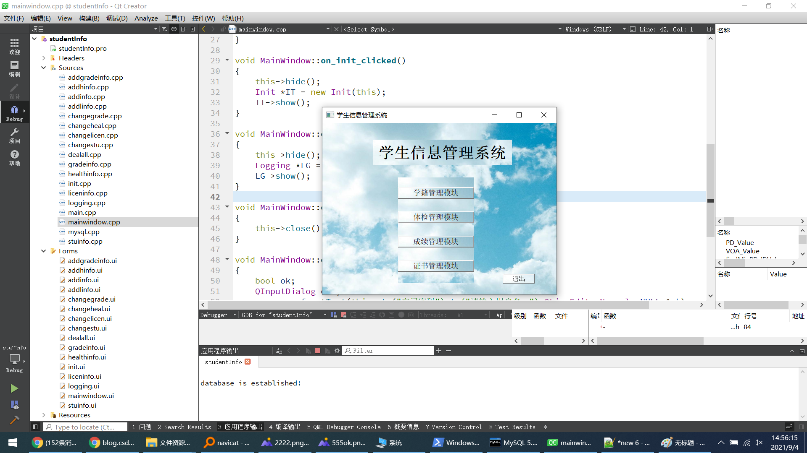

这是 QMYSQL 数据库实现的一个项目。主要用于指导如何使用 QMYSQL 数据库，
如数据库使用过程中遇到的一些问题。
注意：此程序源代码可以开源！可以开源！可以开源！需要源代码自行下载。如下有源码链接！
推荐开发环境：
QT 5.9以上；
QT creator 5.14
mingw32，或 MSVC2015及以上
windows10
推荐运行环境：
windows10
运行系统：windows
使用方法：
打开软件
说明：
本软件仅供娱乐，学习使用。切不可用于商业目的。保护知识产权，人人有责。
作者：825772667@qq.com
=====================================
对应讲解地址： 点击下载1=====================================
源码下载链接： 点击下载2=====================================
